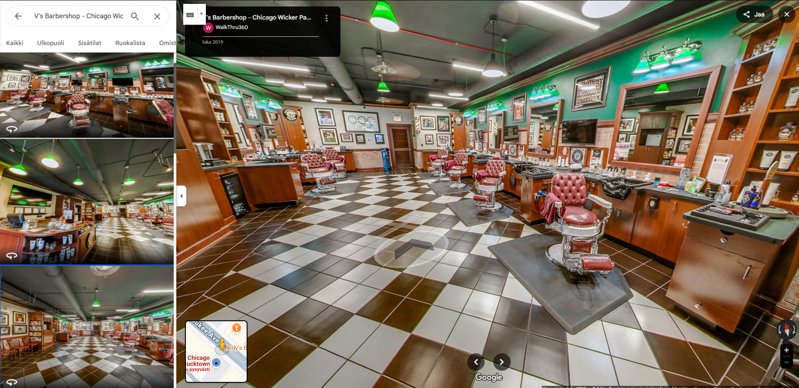

Ravintolat

VirtuaaliKierrokset - Ravintolat
Virtuaalikierros auttaa ravintolaasi tavoittamaan uusia asiakkaita ilman jatkuvia mainoskustannuksia. Ruokailijat haluavat valita juuri oikean ympäristön illalliselle, lounastapaamiselle tai juhlatilaisuudelle. Näyttämällä heille etukäteen tilasi yksityiskohdat, pöytien sijoittelun, valaistuksen ja yleisen tunnelman, voit vahvistaa heidän päätöstään valita juuri sinun ravintolasi.
Virtuaalikierros voidaan toteuttaa kahdella eri tavalla, kuten Google Street View -integraationa, tai nettisivuille upotettuna interaktiivisena kokemuksena, jossa voi olla mukana esimerkiksi ruokalista, tarjoustiedot tai muuta tietoa ravintolasta. Tämä ei ainoastaan tuo ravintolallesi lisänäkyvyyttä ja paranna asiakaskokemusta, vaan myös luo luottamusta ja sitouttaa asiakkaita jo ennen ensikäyntiä.
Edut virtuaalikierroksista:
- Tilojen ja palveluiden esittely ympäri vuorokauden
- Saavutettavuuden parantaminen
- Mahdollisuus lisätä tietopisteitä tärkeistä ominaisuuksista
- Asiakkaiden kiinnostuksen kasvattaminen
- Palvelun laadun ja ammattimaisuuden korostaminen
- Näkyvyys Google Mapsissa ja hakutuloksissa kasvaa, mikä lisää varausten ja kävijöiden määrää.
- Asiakkaat voivat tutustua ravintolaasi jo etukäteen ja tehdä varauksen luottavaisin mielin.
- Erotu muista ravintoloista näyttämällä tunnelma ja viihtyisyys realistisesti.
Miten prosessi etenee:
- Sopimus - Allekirjoitamme kauppa sopimuksen sähköisesti puolustaaksemme molempia päitä
- Suunnittelu - Sovitaan kuvauspäivä ja aika sekä käydään läpi toiveesi. (kuvauksen aikana olisi hyvä jos tilassa ei ole minkäänlaista liikettä, tämä parantaa kuvien laatua)
- 360° Valokuvaus - Taltioimme tilasi korkealaatuisilla 360 asteen kuvilla.
- Editointi ja julkaisu. Viimeistelemme kierroksen ja julkaisemme sen Google Mapsiin ja lähetämme nettisivu valmiin linkin kierroksesta. (tarvittaessa myös embed koodin)
Hinnat
- Google virtuaalikierroksen hinta määräytyy ravintolasi koon mukaan ja maksat vain kerran ilman jatkuvia kuukausimaksuja. Hinnat alkavat 450 eurosta.
- Voit halutessasi lisätä tilaukseen 360 tai 3D nettisivu valmiin virtuaalikierrokseen! Molemmat lisäävät hintaa alkaen 100€
- 360 nettisivu versiossa veloitamme 2€ kuukaudessa ilmaisen 12kk verkkohotellin jälkeen. 3D nettisivu versiossa veloitamme 10€ kuukaudessa ilmaisen 3kk verkkohotellin jälkeen.
Ota yhteyttä!
Ota yhteyttä, niin kerromme miten voimme auttaa sinua hyödyntämään virtuaalitodellisuutta kohteessasi. Rakennamme juuri sinun tarpeisiisi sopivan ratkaisun!